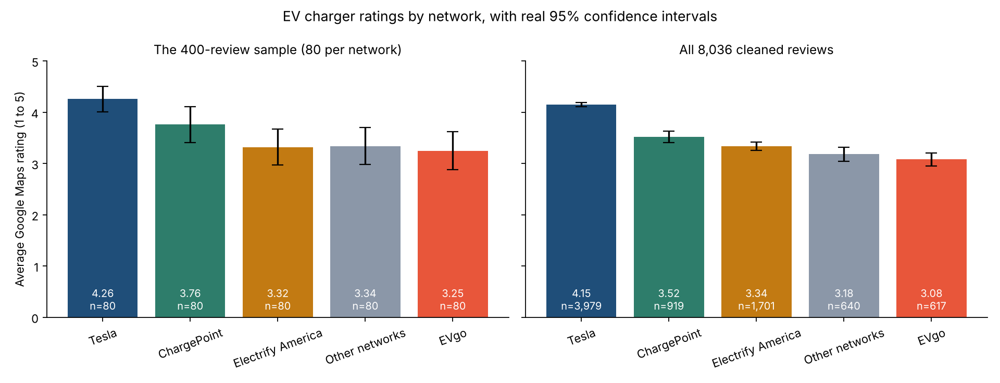
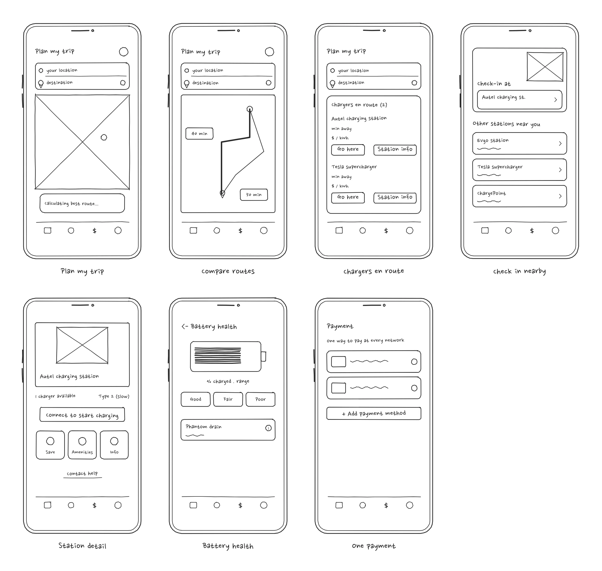
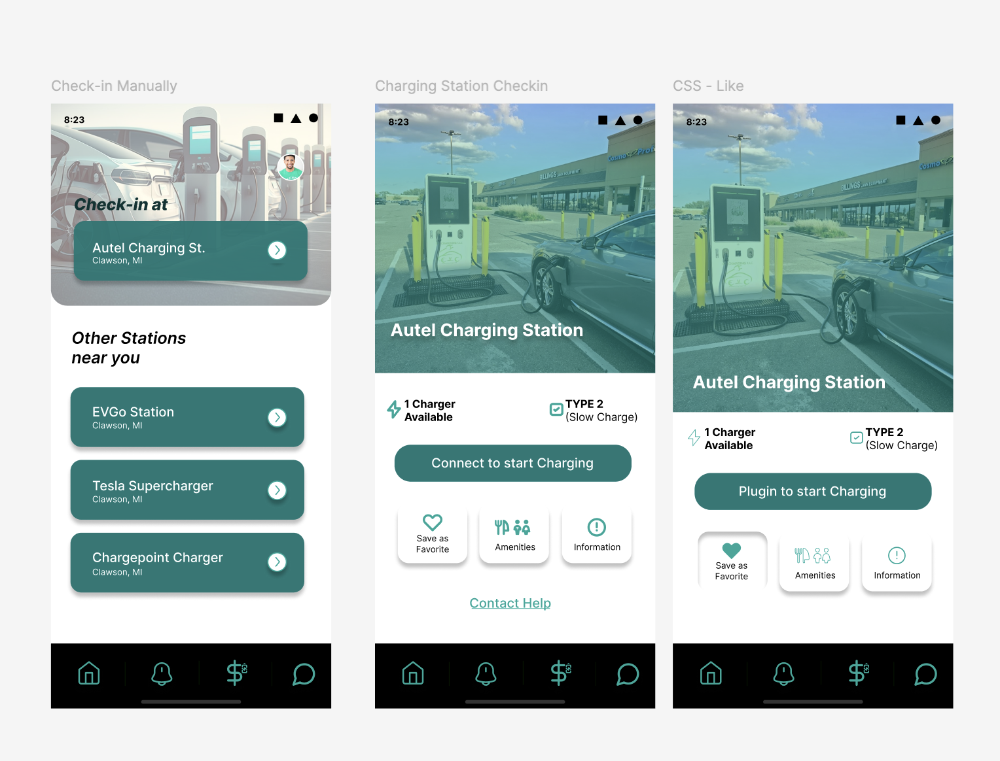
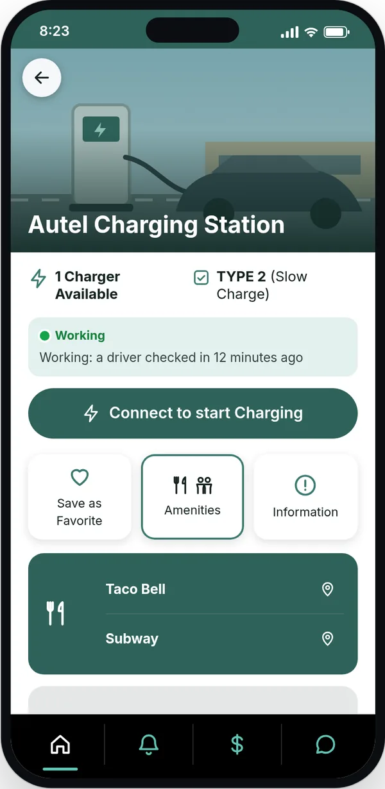
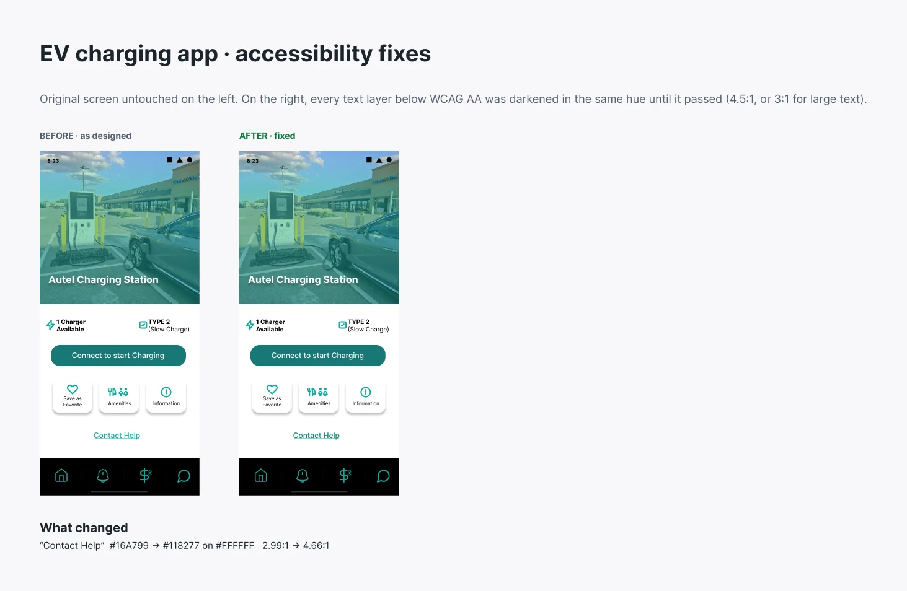

One wallet
Find, check in and pay on any network, in one place.
Research · Mobility · Case study 08
AI-assisted review analysis, then one app for every charging network, tested with 10 drivers.

Every charging network wants its own app
Each charging network wants its own app. Drivers can't see whether a charger works, fits their car, or feels safe at night until they get there.
Started from 16,767 Google Maps reviews cleaned in Google Colab, found what drivers trust, and designed one app to find, check in and pay.
Find, check in and pay on any network, in one place.
Know what's around a charger before driving to it.
Someone new to EVs can find a charger fast.
We collected 16,767 Google Maps reviews of US charging stations, cleaned them with AI-assisted Python in Google Colab, and compared 80 reviews per network. We also reviewed studies since 2012 and compared 5 charging apps.
How this project moved from the mess to a decision. Each stage lists only what was actually done.
We collected 16,767 Google Maps reviews of US charging stations, cleaned them with AI-assisted Python in Google Colab, and compared 80 reviews per network. We also reviewed studies since 2012 and compared 5 charging apps.

Watch 16,767 reviews become a fair comparison
What existing apps did, and didn't
| Feature | PlugShare | Network apps | Our app |
|---|---|---|---|
| Information for every network | Yes | No | Yes |
| Pay for a charge | No | Own network only | Yes |
| Safety and amenities up front | No | No | Yes |
We reviewed peer-reviewed papers, industry studies and driver forums, and marked which pain points each one raised.
| Source | Range anxiety | Charging speed | Car compatibility | Chargers working | Safety | Ease of access | Payment |
|---|---|---|---|---|---|---|---|
| Peer-reviewed | |||||||
| Mental models guide EV charging | ● | ● | ● | no | no | ● | no |
| Fast-charging stations: challenges and issues | no | ● | ● | ● | no | no | no |
| Locating EV charging stations | ● | no | ● | ● | no | ● | no |
| How people value EV charging service | ● | ● | no | no | no | no | no |
| Charging infrastructure and gender equality | ● | no | no | ● | ● | no | no |
| Industry | |||||||
| EVX Public Charging Study | no | ● | no | ● | no | no | ● |
| Improving EV charging on long journeys (BP) | ● | ● | ● | ● | ● | ● | no |
| Plug In America Report 2023 | ● | ● | ● | ● | no | no | no |
| Anecdotal | |||||||
| Payment methods | ● | ● | no | ● | no | no | ● |
| r/electricvehicles | no | no | no | no | no | no | ● |
| r/Ioniq5 thread on US charging | no | ● | no | ● | no | ● | ● |
| Sources raising it | 7 | 8 | 5 | 8 | 2 | 4 | 4 |
Source: Team sheet, Pain Points for EV Charging
One road trip, two ways
Today
5 apps, and you still can't tell if it works
One app
1 app for the whole stop
The Tesla benchmark
Tesla rated highest (4.26 of 5) because chargers work and payment just happens. Experienced drivers measured every other flow against it.Source: Team sheet, Pain Points for EV Charging
A different app for every network
SUS 78.75 with 10 drivers

They took 109.66 seconds and expected it to work like Tesla: set up once, then automatic. Payment now uses your default method, with a pay button that stays on screen. Built, not tested again.
Dropped
It confused people. It became "stand-by".
Three things every charging stop needed
Four steps for every charging stop
Pick a station, start charging and pay in one place, so drivers stop carrying a card per network.
✓ Hardest task, so it changed after testing

Check-in screens: pick a station and start charging without a card.
Every station shows what's nearby before you drive there, because drivers worried about quiet stations at night and families need a place to stop.
✓ Praised by every tester

Station screen with nearby food listed.
Enter where you're going and see chargers along the route with live traffic, where range anxiety peaks.
✓ New drivers praised how simple it was
The reasoning behind the screen: visual design, accessibility and the design system it was built on. Contrast figures are measured from the final screens; any gap is fixed in the Figma file and shown before and after.
A photo of the station at the top lets drivers confirm they're at the right charger.
Connect to start Charging is full width and easy to hit while standing at a charger. White on teal measures about 5.2:1.
Save as Favorite, Amenities and Information each pair an icon with a label, so nothing depends on guessing an icon.
Android system bar, bottom navigation and elevated cards follow Material Design.

Bottom navigation, cards and full-width buttons follow Material Design, with one teal accent used for every action.
Range anxiety is about trust, not batteries
Reliable information calmed drivers more than a bigger battery would.
Hardest task, redesigned after testing
Praised by every tester
SUS 89.5 and 5.46 s to find a charger
| Measure | Before | After |
|---|---|---|
| People new to EVs | not measured | SUS 89.5 |
| Experienced drivers | not measured | SUS 68.0 |
| Everyone | not measured | SUS 78.75 |
The two changes above were built but not tested again.
| Group | Average time | Difficulty (1 is easy) |
|---|---|---|
| People planning to own an EV | 5.46 s | 1.2 out of 5 |
| People who own an EV | 6.19 s | 1.3 out of 5 |
Source: Team sheet, EV Charging App Task Analysis Survey
Usability score (SUS) with 10 drivers
68 is the common average
Beginners and experts want different things: new drivers loved the simplicity, experienced drivers compared us to Tesla.
Ideas, not built.
Learn from driver reports and history, and warn you before you drive to a charger that is likely down.
Figma file (opens in a new tab)
Questions or feedback on this case study? manche.siddhi@gmail.com
Next project
Self-initiated · MCP server · buildingResearch Lens: AI answers that cite participants